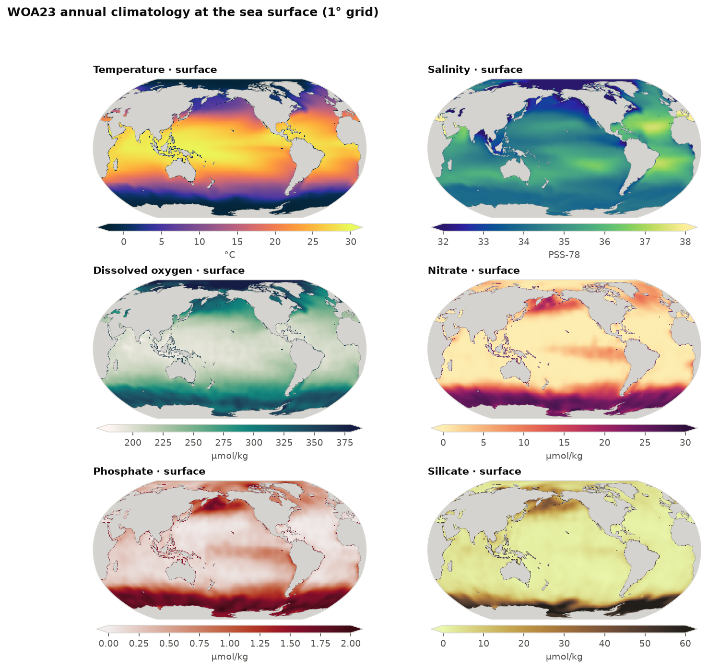
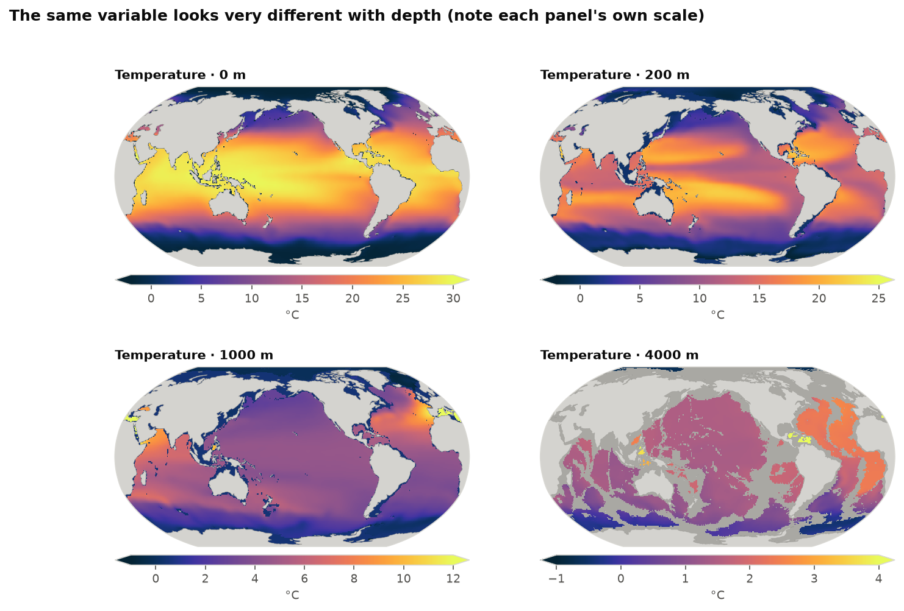
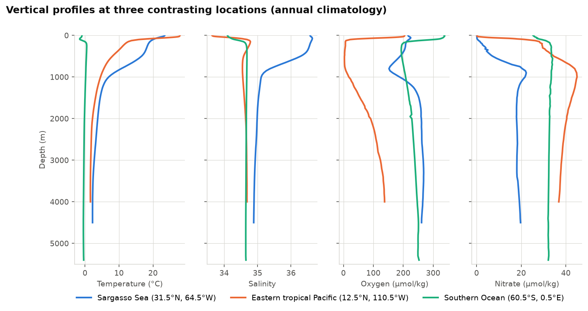
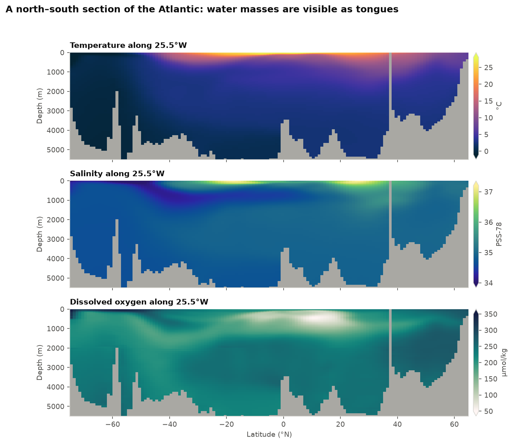
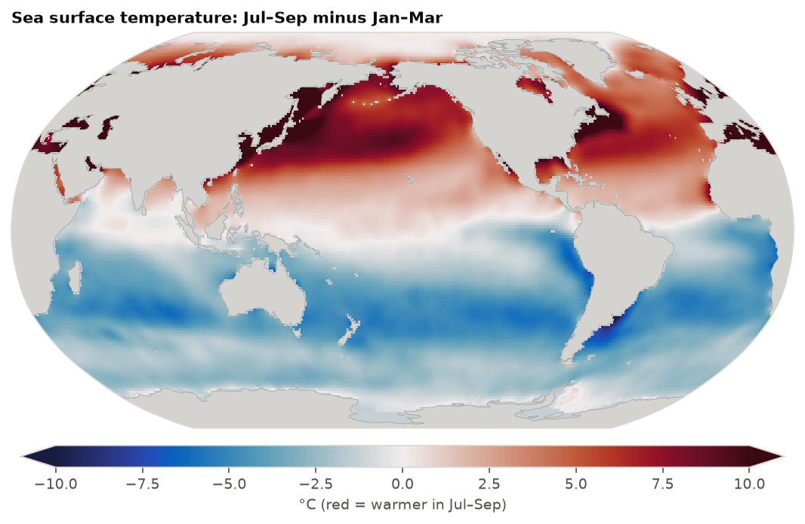
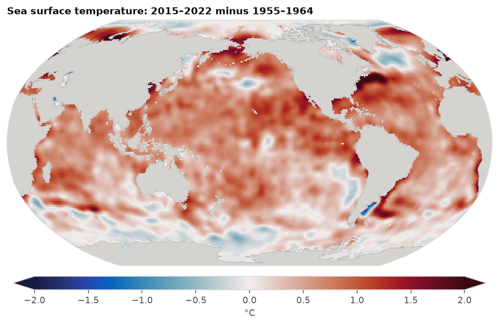
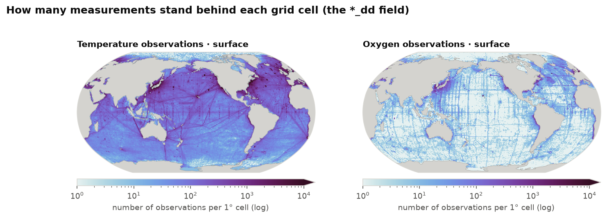
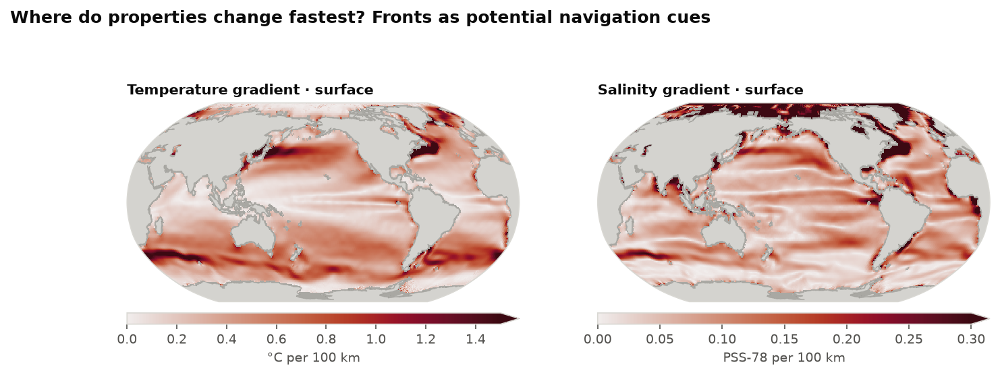

A first look at WOA23 on the 1° grid. All figures are produced by
scripts/make_woa_overview_figures.py. Temperature and salinity use the 1955–2022
average (decav); oxygen and nutrients use all years (all).
The six measured variables

Surface, annual mean. Temperature falls from about 30 °C in the tropics to −2 °C near
the poles. Salinity is highest in the evaporative subtropical gyres and lowest near rivers and ice.
Oxygen is the near mirror image of temperature, because cold water holds more gas. Nutrients are
depleted almost everywhere at the surface, except in upwelling zones: the Southern Ocean, the equatorial
Pacific, the subarctic Pacific and the eastern boundaries.
Depth matters

Temperature at 0, 200, 1,000 and 4,000 m. The strong latitude pattern at the surface
gives way to the shapes of the gyres at 200 m, to the warm, salty Mediterranean outflow spreading into the
Atlantic at 1,000 m, and to a nearly uniform 0 – 3 °C at abyssal depths. For a diving animal, the usable
cues change with depth. In all maps, light grey is land and dark grey is ocean with no value at that depth (the seafloor is shallower).

Vertical profiles. The Sargasso Sea has a deep warm layer. The eastern tropical
Pacific has a sharp thermocline and an oxygen minimum zone a few hundred metres down, which
limits how deep many fish can go. In the Southern Ocean the water column is cold and almost uniform, and
nitrate is high all the way to the surface.

North–south section through the Atlantic (25.5°W). Dark grey is seafloor; the thin gap at 37.5°N is the Azores. Water masses show up as tongues:
low-salinity Antarctic Intermediate Water sinking northward at about 1,000 m, salty North Atlantic Deep
Water flowing south at 2,000 – 3,000 m, and cold Antarctic Bottom Water hugging the seafloor.
Change through time

Seasonal cycle: Jul–Sep minus Jan–Mar sea surface temperature. The two hemispheres
have opposite seasons, and the swing is largest (over 8 °C) in mid-latitude western boundary regions off Asia
and North America. A temperature cue at a given place shifts with the seasons.

Decadal change: 2015–2022 minus 1955–1964. Most of the ocean surface has warmed. A notable exception is the cooling patch south of Greenland (the North Atlantic "warming hole").
The early decade is based on much sparser data, so small-scale features here are uncertain.
How much data is behind it

Number of observations per 1° cell at the surface (_dd). Temperature is
sampled densely along shipping lanes and coasts. Oxygen has orders of magnitude fewer measurements and many
empty cells (dark grey), so the oxygen and nutrient maps are much more interpolated. WOA uses no satellite data, only in-situ measurements.
Full coverage numbers are on the What's in it page.
Toward navigation cues: gradients

Horizontal gradient magnitude at the surface. Strong gradients mark fronts: the Gulf
Stream and Kuroshio, the Antarctic Circumpolar Current fronts, the Brazil–Malvinas confluence and the
equatorial upwelling edges. For salinity they also mark river plumes. These are the places where an animal
swimming a few days could notice a change. The 1° smoothing means real fronts are sharper than shown
here, so our next step is to repeat this on the ¼° grid and compare with the size of the seasonal shifts.